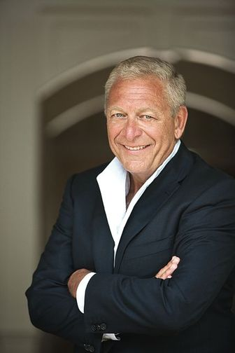

Dr. Maurizio Trevisan, Provost
An endowed professorship is the highest academic award that the College can bestow on a faculty member. It lives in perpetuity and is thus both an honor to the named holder of the appointment and also an enduring tribute to the donor who establishes it.
My scholarship has allowed me to live on campus, where I can completely focus on being the best student that I can be around the clock. “Endowed professorships and chairs represent a critical source of support for attracting new outstanding faculty members to City College, and for honoring our current exceptional faculty. They play an integral part in fulfilling our core mission of access to excellence.” —Dr. Maurizio Trevisan, Provost
THE EXCELLENCE IN TEACHING AWARD
Established by Emeritus Professor Alfred Weiss'46 and professors Julie Rosen, Jim Shields and Norman Shapiro.
THE HAROLD SHAMES PROFESSORSHIP IN BIOMEDICAL ENGINEERING
Established by Harold Shames'44
HAROLD KOBLINER ENDOWED CHAIR IN EDUCATION
Established by Dr. Harold Kobliner '50
THE DEAN JAMES PEACE PROFESSORSHIP THE ANNA AND IRVING BRODSKY CLINICAL PROFESSORSHIP
Established by Bert Brodsky '64
THE POPE CHAIR IN ENGINEERING RESEARCH
Established by Michael Pope '44
THE CLASS OF 1964 PROFESSORSHIP
Established by The Class of 1964
THE DANIEL BERG '50 & FRANCES H. BERG PROFESSORSHIP
THE K.D. IRANI VISITING PROFESSORSHIP
THE DR. LOUIS CURTMAN PROFESSORSHIP IN BIOLOGY
Bert Brodsky '64
“Without the free education I received at City College, I never would have been able to get the college education that enabled me to become the successful person I am today. Through my success I have been able to fulfill my goal to help those less fortunate. I do this through my association with the Alzheimer's Foundation, Gurwin Jewish Geriatric Foundation, UJA and The City College Fund.” —Bert Brodsky '64
$30
$50
$100
$250